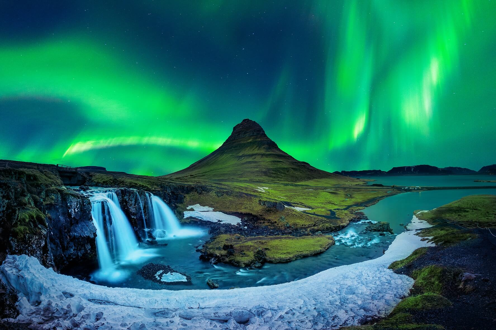

Japón es un país insular de Asia oriental que combina tradición milenaria con tecnología avanzada. Su capital, Tokio, destaca por su modernidad, gastronomía y cultura pop. Ciudades como Kioto y Nara conservan templos y paisajes llenos de historia. Es un destino que mezcla armonía, innovación y un profundo respeto por la naturaleza.
Argentina es un país de Sudamérica con paisajes que van desde la Patagonia hasta las cataratas del Iguazú. Buenos Aires destaca por su cultura, tango y arquitectura histórica. La gastronomía, el vino y la diversidad natural hacen del país un destino único. Es un lugar que combina aventura, historia y tradiciones vibrantes en cada región.

Islandia es una isla del norte de Europa famosa por sus paisajes volcánicos, glaciares y cascadas. Sus cielos nocturnos permiten observar las impresionantes auroras boreales en invierno. Ciudades como Reikiavik combinan cultura moderna con tradiciones vikingas. Es un destino ideal para quienes buscan naturaleza salvaje, fenómenos naturales y tranquilidad única.